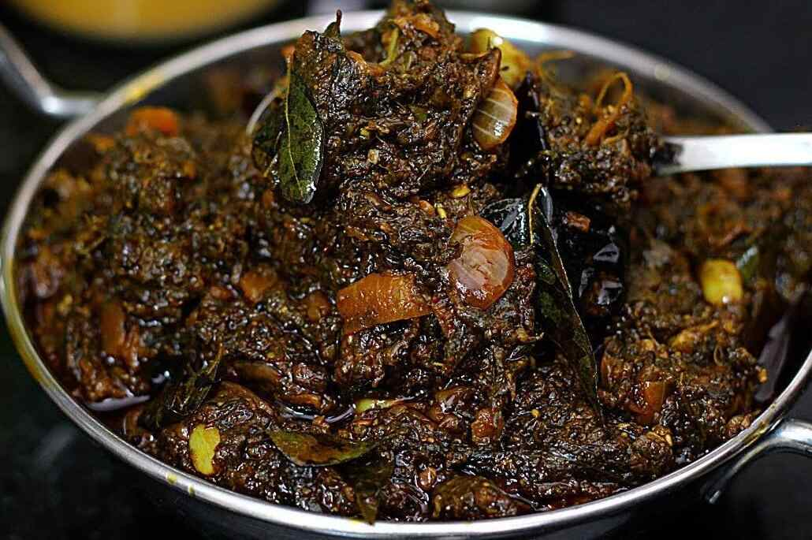

<!DOCTYPE html>
<html>
    <title>andhrapradesh</title>
    <link rel="stylesheet" type="text/css" href="andhrapradesh.css">
</html>
<body>
    
    <marquee><BIG>ANNOUNCEMENT:IF U HAVE ANY QUERIES,DOUGHTS OR ANY OTHER INFORMATION ,OR BETTER IDEAS TO DEVOLOP THE WEBSITE CLICK ON CONTACT US IN HOME PAGE</BIG></marquee>
    <div class="divs">
            <h1 >THE TASTE OF ANDHRA &#128523</h1>
            
            <div class="os">
            <ul>
				<li class="active"><a>ANDHRA PRADESH</a></li>
				<li><a href="http://127.0.0.1:5500/tamilanadu.html">TAMILANADU</a></li>
				<li><a href="http://127.0.0.1:5500/karnataka.html">KARNATAKA</a></li>
				<li><a href="http://127.0.0.1:5500/telangana.html">TELANGANA</a></li>				
				<li><a href="http://127.0.0.1:5500/kerala.html">KERALA</a></li>
                <li><a href="http://127.0.0.1:5500/puduchhery.html">PUDUCHHERY</a></li>
                <li id="back"><a href="http://127.0.0.1:5500/html.html">BACK &#9166</a></li>
			</ul></div>
    </div class="head" >
    <style>
        body {
          font-family: Arial, sans-serif;
          margin: 0;
          padding: 0;
        }
    
        header {
          background-color: #F44336;
          color: #FFF;
          padding: 20px;
          text-align: center;
        }
    
        h1 {
          margin: 0;
          font-size: 36px;
        }
    
        .food-card {
          background-color: #FFF;
          border-radius: 5px;
          box-shadow: 0 2px 4px rgba(0, 0, 0, 0.1);
          margin: 20px;
          padding: 20px;
        }
    
        .food-card h2 {
          font-size: 24px;
          margin-top: 0;
        }
    
        .food-card p {
          margin-bottom: 10px;
        }
        .a{
            height: 400px;
            border: none;
            border-radius: 50px;
        }
      </style>
    </head>
    <body>
      <header>
        <h1>Famous Foods in Andhra Pradesh</h1>
      </header>
    
      <div class="food-card">
        
        <h2 id="che">Kadapa Chennur Dum Biryani</h2>
        <br><br><br<br>
        <p>Kadapa Chennur Dum Biryani is a flavorful and spicy biryani dish popular in Andhra Pradesh. It is made with fragrant basmati rice, tender meat (usually chicken or mutton), and a blend of aromatic spices.
            From North to South, whenever we talked about Biryani with our Indian friends, several cities were mentioned such as Lucknow, Kolkata, Malabar, Ambur and with great prominence the city of <strong>KADAPA</strong>.

                We have tried it in almost every major city we visited in India and all deserve the fame it has for its particularities.<br><br> Therefore, despite the immense discussion we have witnessed several times about the best Biryani, the choice was always very personal. It involves other elements beyond the taste, a lot of affective memory and unique moments that is experienced around the dish.
                
                In our case, the one we liked the most was the Hyderabadi Dum Biryani which we learned during a culinary course in Hyderabad.<br><br> When you prepare the food yourself, everything gets better!
                Besides India, you can find different versions in several countries like Pakistan, Bangladesh, Sri Lanka, Malaysia and even Thailand.

                In Penang, Malaysia we became fans of the delicious dishes of Nasi Kandar with Biryani rice.
                
                In Thailand, we proved the Khao Mok Gai (Thai chicken Biryani), an interesting and aromatic version that also use several spices but it is not as tasty as the Malaysian version.<br><br><br>
            

        </p>
        
      </div>
    
      <div class="food-card">
        <h2>Pulihora</h2><br><br><br>
        <br><br<br>
        <p>Pulihora, also known as tamarind rice, is a tangy and zesty rice dish made with cooked rice, tamarind paste, and a tempering of mustard seeds, curry leaves, and spices. It is a popular dish prepared during festivals and special occasions.
            Pulihora is a popular south Indian dish that can easily be found in the states of Andhra Pradesh, Tamil Nadu, and Karnataka. It consists of rice, turmeric, tamarind, curry leaves, coriander, ginger, and green chiles. <br>Additionally, yellow lentils, roasted sesame seed powder, and mustard seeds can be added to enhance the already rich flavors of the dish.

It is commonly prepared for festivals, yellow in color due to turmeric - considered sacred and symbolizing festive occasions in the Hindu world. The word puli in its name means sour, reflecting the tangy flavor of the dish. However, spicy and salty flavors that are also present in the dish are well balanced with the sour tamarind.<br>

Other states also have their versions of pulihora, so in Tamil Nadu, it is called pulisadham, and in Karnataka, the dish is known as puliyogare. It is traditionally served with sun-dried chiles and yogurt (which is not vegan), making it a complete meal that is said to taste the best after resting for a couple of hours following its preparation.
        </p>
        
      </div>
    
      <div class="food-card">
        <h2>Gongura Pachadi</h2><br><br>
        
        <p>Gongura Pachadi is a traditional Andhra dish made with gongura leaves, a sour leafy green that imparts a unique tangy flavor. The leaves are cooked with spices, tamarind, and jaggery to create a delicious chutney that is often served with rice or dosas.</p>
        Andhra Gongura Pachadi Recipe is a delicious and spicy chutney with the gongura leaves as the star ingredient. Served best with some piping hot steamed rice and a dollop of melted ghee.
        Andhra Gongura Pachadi or this Andhra style chutney made of sorrel leaves an authentic delicacy typical to Telugu cuisine. It is an important part of every festive meal or feast. Although these leaves are called different names in different regions, the nutritional properties of sorrel leaves remain constant.,<br><br>

Did you know: Sorrel leaves are rich in iron, vitamins, folic acid and antioxidants, these leaves are highly recommended for patients of heart conditions and diabetes.

This Gongura Pachadi comes together with a whole riot of flavours and spices like red chillies, coriander, fenugreek and cumin to truly pamper your senses leaving you asking for more.

Serve this Andhra Gongura Pachadi to spice up a South Indian thali meal.
      </div>
      
    
      <div class="food-card">
        <h2>Ghee kaaram dosa</h2><br><br>
        
        <br><br>
        <p>Crispy dosa smeared with red chilli chutney and sprinkled with garlic flavoured roasted gram that makes the perfect morning breakfast
            The Ghee Roast Dosa Recipe is a classic South Indian Breakfast Tiffin that is made with fresh homemade idli dosa batter and then made into a thin paper dosa.<br><br> Serve the Ghee Roast Dosa along with Coconut Chutney and Vengaya Sambar for a delicious breakfast or a weeknight dinner
            The Ghee Roast Dosa Recipe is an easy and quick paper dosa recipe if you have the dosa batter ready in the refrigerator. The Homemade Idli Dosa Batter Recipe, gives a delicious taste to these Ghee Roast Dosa. <br><br>

Your family will simple love this Ghee Roast Dosa Recipe that is made from Homemade Idli Dosa Batter Recipe

Serve Ghee Roast Dosa Recipe/ Paper Dosa along with Thakkali Vengaya Sambar, Tomato Onion Chutney and Coconut Chutney, it tastes absolutely delectable.

If you like the Ghee Roast Dosa Recipe, you can dry a few more Dosa Recipes which are our favorite.
        </p>
      </div>
    
      <div class="food-card">
        <h2>Uggani and Bajji</h2><br><br>
        
        <p>Uggani or Puffed rice upma is a popular breakfast dish from Rayalaseema, Andhra Pradesh.<br><br> We make this dish with Borugulu or Puffed Rice. This dish is a very popular snack in Anantapur district and is not done in other parts of Rayalaseema.
            I was first introduced to this dish after marriage when I visited my in-laws' place. Imagine my surprise when I got to see big moulds of Uggani in roadside shops. They have this as a big heap with Green chilies decorated on top. The best and the ultimate side dish for this Uggani is Mirapakaya Bajji.
            When Athamma started living with us, she made it for us for dinner as we found eating it for breakfast was really tough.<br><br> She makes Onion pakoras for me and hot Mirapakaya Bajji for my hubby. I was most fascinated and interested as this involves making bajjis or pakoras. When my brother was living with us, we used to make it so often. Athamma was just remembering the other day about how much my brother loved it and how we used to make it for him.
            The original intro and pictures were taken during May 2007 and I finally came around updating with new pictures after 10 years! Athamma no longer lives with us and has made our home her summer resort! So when she is here, we again make dishes she is famous for. I wanted a rustic look by using steel plates but ended up with ceramic ones. I must now dig out those street wala pictures.</p>
      </div>
      <div class="food-card">
        <h2>Athreyapuram-Pootarekulu</h2><br><br>
        <br>
        <p>Pootharekulu  first made in Atreyapuram, a Small Village in Andhra Pradesh. Now Atreyapuram Pootharekulu expand business through online, it  is at online. Customer families are still in this business and they make the best and the most delicious Pootharekulu on the planet.This site works with you to arrange Pootharekulu from Atreyapuram and they will be conveyed to your home anyplace in India. Conveyance is free.
            Atreyapuram Putharekulu is one of the most delicious food in World<br><br> .Putharekulu Another name is Paper Sweet, its made from thin layers of Rice flour Stuffed With Sugar and Ghee( Our Specials Dry Fruits , Kaju, Badam, Pista etc.. ). making Putharekulu is very different and traditional Process.
            The 100-year-old history of Atreyapuram Pootharekulu, the unique taste and the way it is made has turned Pootharekulu  into a classic from just an old traditional Andhra sweet. In the days of yore, Pootharekulu was consumed by the Kings and royal families on special occasions to celebrate joy and love. The tradition has been passed on from generation to generation and Pootharekulu is still used in weddings and special occasions in Andhra Pradesh to glorify the occasion<br><br>. Although there are many different variants of Andhra sweets on the market, Pootharekulu has found a unique place forever etched in the hearts of people.
            It’s Delight to eat Pootharekulu and Often served on special Occasions(like marriges,birthdays ,kittypartys etc…
            Srinidhi Enterprises is located at Aterypuram Village, Srinidhi Enterprise Have a Lots Of Experiences in Making delicious Pootharekulu , Srinidhi also making Bellam Pootharekulu, Srinidhi Provides Sugar free Pootharekulu,Bellam Kaju ,Bellam Kaju Badam,Bellam Kaju Badam Pista ,Sugar Kaju,Sugar Kaju Badam, Sugar Kaju Badam Pista Pootharekulu in Our best Quality .gutti vankaya curry recipe | stuffed brinjal curry | gutti vankaya kura or koora with step by step photo and video recipe. curry or gravy recipes are staple food for most of the indian households. these gravies or curries are made with a different purpose with myriad choice of locally grown native veggies. one such hugely popular spicy and creamy peanut based gravy is the gutti vankaya curry known for its spice level.</p>
      </div>
      <div class="food-card">
        <h2>Gutti vankaya curry</h2><br><br>
        <br><br>
        <p>
            gutti vankaya curry recipe | stuffed brinjal
             curry |<br><br> gutti vankaya kura or koora with detailed photo and video recipe. an authentic and spicy curry recipe made with tender and small eggplant in a peanut and coconut-based gravy. the recipe mainly 
             hails from the andhra cuisine or telugu cuisine but popular among other south indian states too. it is generally served with indian flatbread like roti or chapati but tastes good with rice too.  
             well, this is not my first post of eggplant curry, neither a stuffed brinjal curry.i have posted quite a few variations till now in my blog including the north indian and karnataka version.<br><br> yet i was surprised when i was introduced to this new variation of stuffed brinjal curry. i was having our weekend dinner and we chose to have it in an andhra cuisine fine dine. we were planning to have some hyderabadi biryani, but my husband wanted to try gutti vankaya kura from the menu with some garlic naan. we both were extremely happy with the spicy and creamy texture of this curry and i personally thought of sharing this recipe immediately in my blog with a video. there isn’t much difference with the ennegayi recipe, but just that it is creamier and spicy.
             anyway, some of the important tips, suggestions and variations for a perfect spicy gutti vankaya curry recipe. firstly as i mentioned earlier the eggplant has to be tender and also small in size. particularly the purple coloured purple with stripes are ideal for this curry. secondly, <br><br>while you are preparing this curry, you have to be generous with the amount of oil added to make this curry. addition of oil lowers the spice level of the curry and at the same time, it makes it more creamy. lastly, increase or decrease the spice level as per your taste preference. you can control with the red chillies and also control by adding jaggery. 
        </p>
      </div>
      <div class="food-card">
        <h2>Nellore Peddareddy Chepala Pulusu</h2><br><br>
        
        <br><br>
        <p>
            This nellore chepala pulusu is tangy, spicy and delicious. I grew up watching it how mom used to make it. Selection of fish is important for that authentic nellore style chepala pulusu.

It’s made in a wide vessel, so that all the fish pieces are not crowded or stacked over one another. My mom’s secret to the chepala pulusu is cooking in an earthen pot and a secret ingredient added (roasted mustard, Cumin, coriander and fenugreek seeds powder added at the end).

he proximity of the Andhra city of Nellore to Chennai has left an imprint on Chennai’s culinary culture.<br><br> I saw this influence closely when I moved to the city in 2000. Back then, there were not many good Kerala restaurants, so whenever I craved seafood, I would go to an Andhra restaurant for Nellore Fish Curry. It has a wonderful depth of flavour – tamarind and tomatoes give it acidity, and chillies add a pop of heat. Try it out and enjoy it with steamed rice.
Chepala pulusu is an Andhra fish curry, which is a famous spicy seafood recipe, prepared by cooking fresh fish pieces in tangy tamarind sauce with lots of hot spices.

I love to try different cuisines every time when I make a nonveg recipe. After all we Indians are so blessed with a variety of different delicacies around various parts of India.

This time my hubby wanted some spicy tangy fish curry for dinner and thus I ended up making this excellent Chepala pulusu …and like any other Andhra recipe, this one tastes great every time when I make this.

This method doesn’t require coconut milk or coconut paste hence it is tangier than other versions of fish gravies.<br><br> I have already posted a Chettinad-style fish curry(Chettinad meen kulambu) in my blog that you may want to check.

Among other nonveg items, seafood is considered healthy and of course, fish is the top choice. I made this Andhra chepala pulusu with black pomfret today. But this chepala pulusu tastes good with freshwater fish.

Eating fish regularly benefits brain health and enhances the function of the nervous system. Gradually include fish food in your kids’ meal and make it a practice to eat fish once a week.
        </p>
      </div>
    
      <div class="food-card">
        <h2>Punugulu</h2><br><br>
        

        <br><br>
        <p>
            I was bored making Idli and wanted to make something different from the left over batter...<br><br> this name and dish is new to me..and found this while surfing the net. I tried my hands at making this 2 to 3 times and it turned out to be super tasty!!

            It's a great option to have it like a snack in the evening with your cup of tea or you can pack this for your kids Tiffin too!. 
            
            I blog about a dish / recipe, when my friends at office and family tastes and compliments the dish!  So in short...all the dishes are tested, tried and tasted!
            
            Let me not take much of your time and quickly share the very famous snack recipe/ street food from Andra..."Punugulu".
            
            The weather is very pleasant these days and you can enjoy this crispy dish hot with chutney or sauce.
            
            
        </p>
      </div>
    <br><br><br><br><br>
      <footer>
        <div class="container">
          <div class="footer-content">
            <div class="logo">
              
            </div>
            <div class="navigation">
              <ul>
                <li><a href="#">Home</a></li>
                <li><a href="#">Recipes</a></li>
                <li><a href="#">Restaurants</a></li>
                <li><a href="#">About Us</a></li>
                <li><a href="#">Contact</a></li>
              </ul>
            </div>
            <div class="social-media">
              <a href="#"><i class="fab fa-facebook"></i></a>
              <a href="#"><i class="fab fa-instagram"></i></a>
              <a href="#"><i class="fab fa-twitter"></i></a>
            </div>
          </div>
          <div class="footer-info">
            <p>&copy; 2023 Food Website. All rights reserved. | Designed by Your Name</p>
          </div>
        </div>
      </footer>
      
    </body>
    </html>
   
</body>
</html>